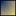

<!doctype html>
<html lang="en">
    <head>
        <meta charset="utf-8">
        <meta http-equiv="X-UA-Compatible" content="IE=edge">
        <meta name="viewport" content="initial-scale=1,user-scalable=no,maximum-scale=1,width=device-width">
        <meta name="mobile-web-app-capable" content="yes">
        <meta name="apple-mobile-web-app-capable" content="yes">
        <link rel="stylesheet" href="css/leaflet.css">
        <link rel="stylesheet" href="css/L.Control.Layers.Tree.css">
        <link rel="stylesheet" href="css/L.Control.Locate.min.css">
        <link rel="stylesheet" href="css/qgis2web.css">
        <link rel="stylesheet" href="css/fontawesome-all.min.css">
        <link rel="stylesheet" href="css/leaflet-search.css">
        <link rel="stylesheet" href="css/leaflet-measure.css">
        <style>
        html, body, #map {
            width: 100%;
            height: 100%;
            padding: 0;
            margin: 0;
        }
        </style>
        <title></title>
    </head>
    <body>
        <div id="map">
        </div>
        <script src="js/qgis2web_expressions.js"></script>
        <script src="js/leaflet.js"></script>
        <script src="js/L.Control.Layers.Tree.min.js"></script>
        <script src="js/L.Control.Locate.min.js"></script>
        <script src="js/multi-style-layer.js"></script>
        <script src="js/leaflet.rotatedMarker.js"></script>
        <script src="js/leaflet.pattern.js"></script>
        <script src="js/leaflet-hash.js"></script>
        <script src="js/Autolinker.min.js"></script>
        <script src="js/rbush.min.js"></script>
        <script src="js/labelgun.min.js"></script>
        <script src="js/labels.js"></script>
        <script src="js/leaflet-measure.js"></script>
        <script src="js/leaflet-search.js"></script>
        <script src="data/Reginandina_1.js"></script>
        <script src="data/DrenajesSencillos_2.js"></script>
        <script src="data/DrenajesDobles_3.js"></script>
        <script src="data/Volcanes_4.js"></script>
        <script>
        var highlightLayer;
        function highlightFeature(e) {
            highlightLayer = e.target;

            if (e.target.feature.geometry.type === 'LineString' || e.target.feature.geometry.type === 'MultiLineString') {
              highlightLayer.setStyle({
                color: '#ffff00',
              });
            } else {
              highlightLayer.setStyle({
                fillColor: '#ffff00',
                fillOpacity: 1
              });
            }
        }
        var map = L.map('map', {
            zoomControl:true, maxZoom:28, minZoom:1
        }).fitBounds([[2.022528693409209,-79.68222420758244],[8.326081465882213,-69.54376014758027]]);
        var hash = new L.Hash(map);
        map.attributionControl.setPrefix('<a href="https://github.com/tomchadwin/qgis2web" target="_blank">qgis2web</a> &middot; <a href="https://leafletjs.com" title="A JS library for interactive maps">Leaflet</a> &middot; <a href="https://qgis.org">QGIS</a>');
        var autolinker = new Autolinker({truncate: {length: 30, location: 'smart'}});
        function removeEmptyRowsFromPopupContent(content, feature) {
         var tempDiv = document.createElement('div');
         tempDiv.innerHTML = content;
         var rows = tempDiv.querySelectorAll('tr');
         for (var i = 0; i < rows.length; i++) {
             var td = rows[i].querySelector('td.visible-with-data');
             var key = td ? td.id : '';
             if (td && td.classList.contains('visible-with-data') && feature.properties[key] == null) {
                 rows[i].parentNode.removeChild(rows[i]);
             }
         }
         return tempDiv.innerHTML;
        }
        document.querySelector(".leaflet-popup-pane").addEventListener("load", function(event) {
          var tagName = event.target.tagName,
            popup = map._popup;
          // Also check if flag is already set.
          if (tagName === "IMG" && popup && !popup._updated) {
            popup._updated = true; // Set flag to prevent looping.
            popup.update();
          }
        }, true);
        L.control.locate({locateOptions: {maxZoom: 19}}).addTo(map);
        var measureControl = new L.Control.Measure({
            position: 'topleft',
            primaryLengthUnit: 'meters',
            secondaryLengthUnit: 'kilometers',
            primaryAreaUnit: 'sqmeters',
            secondaryAreaUnit: 'hectares'
        });
        measureControl.addTo(map);
        document.getElementsByClassName('leaflet-control-measure-toggle')[0]
        .innerHTML = '';
        document.getElementsByClassName('leaflet-control-measure-toggle')[0]
        .className += ' fas fa-ruler';
        var bounds_group = new L.featureGroup([]);
        function setBounds() {
        }
        map.createPane('pane_ESRISatellite_0');
        map.getPane('pane_ESRISatellite_0').style.zIndex = 400;
        var layer_ESRISatellite_0 = L.tileLayer('https://server.arcgisonline.com/ArcGIS/rest/services/World_Imagery/MapServer/tile/{z}/{y}/{x}', {
            pane: 'pane_ESRISatellite_0',
            opacity: 1.0,
            attribution: '',
            minZoom: 1,
            maxZoom: 28,
            minNativeZoom: 0,
            maxNativeZoom: 20
        });
        layer_ESRISatellite_0;
        map.addLayer(layer_ESRISatellite_0);
        function pop_Reginandina_1(feature, layer) {
            layer.on({
                mouseout: function(e) {
                    for (var i in e.target._eventParents) {
                        if (typeof e.target._eventParents[i].resetStyle === 'function') {
                            e.target._eventParents[i].resetStyle(e.target);
                        }
                    }
                },
                mouseover: highlightFeature,
            });
            var popupContent = '<table>\
                    <tr>\
                        <th scope="row">DeCodigo</th>\
                        <td>' + (feature.properties['DeCodigo'] !== null ? autolinker.link(feature.properties['DeCodigo'].toLocaleString()) : '') + '</td>\
                    </tr>\
                    <tr>\
                        <th scope="row">DeNombre</th>\
                        <td class="visible-with-data" id="DeNombre">' + (feature.properties['DeNombre'] !== null ? autolinker.link(feature.properties['DeNombre'].toLocaleString()) : '') + '</td>\
                    </tr>\
                    <tr>\
                        <th scope="row">DeArea</th>\
                        <td>' + (feature.properties['DeArea'] !== null ? autolinker.link(feature.properties['DeArea'].toLocaleString()) : '') + '</td>\
                    </tr>\
                    <tr>\
                        <th scope="row">DeNorma</th>\
                        <td>' + (feature.properties['DeNorma'] !== null ? autolinker.link(feature.properties['DeNorma'].toLocaleString()) : '') + '</td>\
                    </tr>\
                </table>';
            layer.bindPopup(popupContent, {maxHeight: 400});
            var popup = layer.getPopup();
            var content = popup.getContent();
            var updatedContent = removeEmptyRowsFromPopupContent(content, feature);
            popup.setContent(updatedContent);
        }

        function style_Reginandina_1_0() {
            return {
                pane: 'pane_Reginandina_1',
                interactive: true,
            }
        }
        function style_Reginandina_1_1() {
            return {
                pane: 'pane_Reginandina_1',
                opacity: 1,
                color: 'rgba(0,0,0,1.0)',
                dashArray: '',
                lineCap: 'butt',
                lineJoin: 'miter',
                weight: 1.0, 
                fillOpacity: 0,
                interactive: true,
            }
        }
        map.createPane('pane_Reginandina_1');
        map.getPane('pane_Reginandina_1').style.zIndex = 401;
        map.getPane('pane_Reginandina_1').style['mix-blend-mode'] = 'normal';
        var layer_Reginandina_1 = new L.geoJson.multiStyle(json_Reginandina_1, {
            attribution: '',
            interactive: true,
            dataVar: 'json_Reginandina_1',
            layerName: 'layer_Reginandina_1',
            pane: 'pane_Reginandina_1',
            onEachFeature: pop_Reginandina_1,
            styles: [style_Reginandina_1_0,style_Reginandina_1_1,]
        });
        bounds_group.addLayer(layer_Reginandina_1);
        map.addLayer(layer_Reginandina_1);
        function pop_DrenajesSencillos_2(feature, layer) {
            layer.on({
                mouseout: function(e) {
                    for (var i in e.target._eventParents) {
                        if (typeof e.target._eventParents[i].resetStyle === 'function') {
                            e.target._eventParents[i].resetStyle(e.target);
                        }
                    }
                },
                mouseover: highlightFeature,
            });
            var popupContent = '<table>\
                    <tr>\
                        <th scope="row">NOMBRE_GEO</th>\
                        <td class="visible-with-data" id="NOMBRE_GEO">' + (feature.properties['NOMBRE_GEO'] !== null ? autolinker.link(feature.properties['NOMBRE_GEO'].toLocaleString()) : '') + '</td>\
                    </tr>\
                    <tr>\
                        <th scope="row">ESTADO_DRE</th>\
                        <td>' + (feature.properties['ESTADO_DRE'] !== null ? autolinker.link(feature.properties['ESTADO_DRE'].toLocaleString()) : '') + '</td>\
                    </tr>\
                    <tr>\
                        <td colspan="2">' + (feature.properties['PROYECTO'] !== null ? autolinker.link(feature.properties['PROYECTO'].toLocaleString()) : '') + '</td>\
                    </tr>\
                    <tr>\
                        <th scope="row">SYMBOL</th>\
                        <td>' + (feature.properties['SYMBOL'] !== null ? autolinker.link(feature.properties['SYMBOL'].toLocaleString()) : '') + '</td>\
                    </tr>\
                    <tr>\
                        <td colspan="2">' + (feature.properties['FECHA'] !== null ? autolinker.link(feature.properties['FECHA'].toLocaleString()) : '') + '</td>\
                    </tr>\
                    <tr>\
                        <th scope="row">DISPERSION</th>\
                        <td class="visible-with-data" id="DISPERSION">' + (feature.properties['DISPERSION'] !== null ? autolinker.link(feature.properties['DISPERSION'].toLocaleString()) : '') + '</td>\
                    </tr>\
                    <tr>\
                        <th scope="row">Shape_Leng</th>\
                        <td>' + (feature.properties['Shape_Leng'] !== null ? autolinker.link(feature.properties['Shape_Leng'].toLocaleString()) : '') + '</td>\
                    </tr>\
                </table>';
            layer.bindPopup(popupContent, {maxHeight: 400});
            var popup = layer.getPopup();
            var content = popup.getContent();
            var updatedContent = removeEmptyRowsFromPopupContent(content, feature);
            popup.setContent(updatedContent);
        }

        function style_DrenajesSencillos_2_0() {
            return {
                pane: 'pane_DrenajesSencillos_2',
                opacity: 1,
                color: 'rgba(88,148,196,1.0)',
                dashArray: '',
                lineCap: 'square',
                lineJoin: 'bevel',
                weight: 1.0,
                fillOpacity: 0,
                interactive: true,
            }
        }
        map.createPane('pane_DrenajesSencillos_2');
        map.getPane('pane_DrenajesSencillos_2').style.zIndex = 402;
        map.getPane('pane_DrenajesSencillos_2').style['mix-blend-mode'] = 'normal';
        var layer_DrenajesSencillos_2 = new L.geoJson(json_DrenajesSencillos_2, {
            attribution: '',
            interactive: true,
            dataVar: 'json_DrenajesSencillos_2',
            layerName: 'layer_DrenajesSencillos_2',
            pane: 'pane_DrenajesSencillos_2',
            onEachFeature: pop_DrenajesSencillos_2,
            style: style_DrenajesSencillos_2_0,
        });
        bounds_group.addLayer(layer_DrenajesSencillos_2);
        map.addLayer(layer_DrenajesSencillos_2);
        function pop_DrenajesDobles_3(feature, layer) {
            layer.on({
                mouseout: function(e) {
                    for (var i in e.target._eventParents) {
                        if (typeof e.target._eventParents[i].resetStyle === 'function') {
                            e.target._eventParents[i].resetStyle(e.target);
                        }
                    }
                },
                mouseover: highlightFeature,
            });
            var popupContent = '<table>\
                    <tr>\
                        <th scope="row">NOMBRE_GEO</th>\
                        <td class="visible-with-data" id="NOMBRE_GEO">' + (feature.properties['NOMBRE_GEO'] !== null ? autolinker.link(feature.properties['NOMBRE_GEO'].toLocaleString()) : '') + '</td>\
                    </tr>\
                    <tr>\
                        <td colspan="2">' + (feature.properties['PROYECTO'] !== null ? autolinker.link(feature.properties['PROYECTO'].toLocaleString()) : '') + '</td>\
                    </tr>\
                    <tr>\
                        <th scope="row">SYMBOL</th>\
                        <td>' + (feature.properties['SYMBOL'] !== null ? autolinker.link(feature.properties['SYMBOL'].toLocaleString()) : '') + '</td>\
                    </tr>\
                    <tr>\
                        <td colspan="2">' + (feature.properties['FECHA'] !== null ? autolinker.link(feature.properties['FECHA'].toLocaleString()) : '') + '</td>\
                    </tr>\
                    <tr>\
                        <th scope="row">SHAPE_Leng</th>\
                        <td>' + (feature.properties['SHAPE_Leng'] !== null ? autolinker.link(feature.properties['SHAPE_Leng'].toLocaleString()) : '') + '</td>\
                    </tr>\
                    <tr>\
                        <th scope="row">SHAPE_Area</th>\
                        <td>' + (feature.properties['SHAPE_Area'] !== null ? autolinker.link(feature.properties['SHAPE_Area'].toLocaleString()) : '') + '</td>\
                    </tr>\
                </table>';
            layer.bindPopup(popupContent, {maxHeight: 400});
            var popup = layer.getPopup();
            var content = popup.getContent();
            var updatedContent = removeEmptyRowsFromPopupContent(content, feature);
            popup.setContent(updatedContent);
        }

        function style_DrenajesDobles_3_0() {
            return {
                pane: 'pane_DrenajesDobles_3',
                opacity: 1,
                color: 'rgba(35,35,35,1.0)',
                dashArray: '',
                lineCap: 'butt',
                lineJoin: 'miter',
                weight: 1.0, 
                fill: true,
                fillOpacity: 1,
                fillColor: 'rgba(58,43,225,1.0)',
                interactive: true,
            }
        }
        map.createPane('pane_DrenajesDobles_3');
        map.getPane('pane_DrenajesDobles_3').style.zIndex = 403;
        map.getPane('pane_DrenajesDobles_3').style['mix-blend-mode'] = 'normal';
        var layer_DrenajesDobles_3 = new L.geoJson(json_DrenajesDobles_3, {
            attribution: '',
            interactive: true,
            dataVar: 'json_DrenajesDobles_3',
            layerName: 'layer_DrenajesDobles_3',
            pane: 'pane_DrenajesDobles_3',
            onEachFeature: pop_DrenajesDobles_3,
            style: style_DrenajesDobles_3_0,
        });
        bounds_group.addLayer(layer_DrenajesDobles_3);
        map.addLayer(layer_DrenajesDobles_3);
        function pop_Volcanes_4(feature, layer) {
            layer.on({
                mouseout: function(e) {
                    for (var i in e.target._eventParents) {
                        if (typeof e.target._eventParents[i].resetStyle === 'function') {
                            e.target._eventParents[i].resetStyle(e.target);
                        }
                    }
                },
                mouseover: highlightFeature,
            });
            var popupContent = '<table>\
                    <tr>\
                        <th scope="row">OBJECTID</th>\
                        <td>' + (feature.properties['OBJECTID'] !== null ? autolinker.link(feature.properties['OBJECTID'].toLocaleString()) : '') + '</td>\
                    </tr>\
                    <tr>\
                        <th scope="row">VolcanID</th>\
                        <td>' + (feature.properties['VolcanID'] !== null ? autolinker.link(feature.properties['VolcanID'].toLocaleString()) : '') + '</td>\
                    </tr>\
                    <tr>\
                        <th scope="row">NombreVolc</th>\
                        <td class="visible-with-data" id="NombreVolc">' + (feature.properties['NombreVolc'] !== null ? autolinker.link(feature.properties['NombreVolc'].toLocaleString()) : '') + '</td>\
                    </tr>\
                    <tr>\
                        <th scope="row">AlturaSobr</th>\
                        <td class="visible-with-data" id="AlturaSobr">' + (feature.properties['AlturaSobr'] !== null ? autolinker.link(feature.properties['AlturaSobr'].toLocaleString()) : '') + '</td>\
                    </tr>\
                    <tr>\
                        <th scope="row">Latitud</th>\
                        <td>' + (feature.properties['Latitud'] !== null ? autolinker.link(feature.properties['Latitud'].toLocaleString()) : '') + '</td>\
                    </tr>\
                    <tr>\
                        <th scope="row">Longitud</th>\
                        <td>' + (feature.properties['Longitud'] !== null ? autolinker.link(feature.properties['Longitud'].toLocaleString()) : '') + '</td>\
                    </tr>\
                    <tr>\
                        <td colspan="2">' + (feature.properties['Comentario'] !== null ? autolinker.link(feature.properties['Comentario'].toLocaleString()) : '') + '</td>\
                    </tr>\
                    <tr>\
                        <td colspan="2">' + (feature.properties['URL'] !== null ? autolinker.link(feature.properties['URL'].toLocaleString()) : '') + '</td>\
                    </tr>\
                    <tr>\
                        <td colspan="2">' + (feature.properties['GlobalID'] !== null ? autolinker.link(feature.properties['GlobalID'].toLocaleString()) : '') + '</td>\
                    </tr>\
                </table>';
            layer.bindPopup(popupContent, {maxHeight: 400});
            var popup = layer.getPopup();
            var content = popup.getContent();
            var updatedContent = removeEmptyRowsFromPopupContent(content, feature);
            popup.setContent(updatedContent);
        }

        function style_Volcanes_4_0() {
            return {
                pane: 'pane_Volcanes_4',
                radius: 4.0,
                opacity: 1,
                color: 'rgba(128,17,25,1.0)',
                dashArray: '',
                lineCap: 'butt',
                lineJoin: 'miter',
                weight: 2.0,
                fill: true,
                fillOpacity: 1,
                fillColor: 'rgba(219,30,42,1.0)',
                interactive: true,
            }
        }
        map.createPane('pane_Volcanes_4');
        map.getPane('pane_Volcanes_4').style.zIndex = 404;
        map.getPane('pane_Volcanes_4').style['mix-blend-mode'] = 'normal';
        var layer_Volcanes_4 = new L.geoJson(json_Volcanes_4, {
            attribution: '',
            interactive: true,
            dataVar: 'json_Volcanes_4',
            layerName: 'layer_Volcanes_4',
            pane: 'pane_Volcanes_4',
            onEachFeature: pop_Volcanes_4,
            pointToLayer: function (feature, latlng) {
                var context = {
                    feature: feature,
                    variables: {}
                };
                return L.circleMarker(latlng, style_Volcanes_4_0(feature));
            },
        });
        bounds_group.addLayer(layer_Volcanes_4);
        map.addLayer(layer_Volcanes_4);
        var baseMaps = {};
        var overlaysTree = [
            {label: ' Volcanes', layer: layer_Volcanes_4},
            {label: ' Drenajes Dobles', layer: layer_DrenajesDobles_3},
            {label: ' Drenajes Sencillos', layer: layer_DrenajesSencillos_2},
            {label: ' Región andina', layer: layer_Reginandina_1},
            {label: "ESRI Satellite", layer: layer_ESRISatellite_0},]
        var lay = L.control.layers.tree(null, overlaysTree,{
            //namedToggle: true,
            //selectorBack: false,
            //closedSymbol: '&#8862; &#x1f5c0;',
            //openedSymbol: '&#8863; &#x1f5c1;',
            //collapseAll: 'Collapse all',
            //expandAll: 'Expand all',
            collapsed: false, 
        });
        lay.addTo(map);
        setBounds();
        map.addControl(new L.Control.Search({
            layer: layer_Reginandina_1,
            initial: false,
            hideMarkerOnCollapse: true,
            propertyName: 'DeNombre'}));
        document.getElementsByClassName('search-button')[0].className +=
         ' fa fa-binoculars';
        </script>
    </body>
</html>
